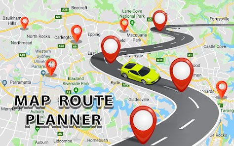

Geely EX2 vs Mobil Bensin: Hitung Penghematan Setahun

Mobil listrik hemat energi, tetapi seberapa besar bedanya dengan mobil bensin? Hitungan di bawah memakai asumsi yang jelas supaya kamu bisa menggantinya dengan angka milikmu sendiri. Ini ilustrasi biaya energi saja, belum termasuk harga mobil, cicilan, asuransi, dan pajak.
Asumsi yang dipakai
- Geely EX2: konsumsi nyata 14 kWh per 100 km dan tarif listrik rumah Rp1.444,70 per kWh. Hitungan dasarnya ada di biaya mengisi daya di rumah.
- Mobil bensin pembanding: konsumsi 12 km per liter di pemakaian campuran kota, bahan bakar setara Pertamax dengan harga contoh Rp12.000 per liter.
- Jarak tempuh 1.500 km per bulan, setara komuter kota dengan akhir pekan.
Harga listrik dan bahan bakar berubah dari waktu ke waktu. Ganti angkanya dengan harga terkini sebelum mengambil keputusan.
Biaya per kilometer
| Jenis | Cara hitung | Biaya per km |
|---|---|---|
| Geely EX2 (isi di rumah) | 0,14 kWh x Rp1.444,70 | sekitar Rp202 |
| Mobil bensin 12 km/liter | Rp12.000 dibagi 12 | Rp1.000 |
Biaya per bulan dan per tahun
| Periode | EX2 | Mobil bensin | Selisih |
|---|---|---|---|
| Per bulan (1.500 km) | sekitar Rp303.000 | Rp1.500.000 | sekitar Rp1.200.000 |
| Per tahun | sekitar Rp3,6 juta | Rp18 juta | sekitar Rp14,4 juta |
Jika kamu lebih sering mengisi di SPKLU yang tarif per kWh-nya lebih tinggi, selisihnya akan mengecil. Jika jarak tempuhmu lebih jauh, selisihnya membesar.
Biaya yang tidak boleh dilupakan
- Instalasi charger rumah. Biaya satu kali, termasuk kemungkinan penambahan daya listrik.
- Selisih harga mobil. Mobil listrik bisa lebih mahal atau lebih murah dibanding pembanding, tergantung segmen dan promo.
- Perawatan. Mobil listrik tidak butuh ganti oli mesin, tetapi tetap ada servis berkala. Lihat servis mobil listrik EX2.
- Pajak dan insentif. Aturan bisa berubah. Tanyakan ke tim penjualan perihal pajak kendaraan dan insentif yang berlaku saat kamu membeli.
Kapan penghematan terasa paling besar
- Kamu berkendara cukup jauh tiap hari.
- Kamu bisa mengisi daya di rumah atau kantor.
- Kamu memakai mobil bensin yang cukup boros.
- Kamu berencana memakai mobil lebih dari beberapa tahun.
Jika kamu hanya memakai mobil sesekali, penghematan bahan bakar akan terasa lebih kecil sehingga faktor lain seperti kenyamanan dan teknologi jadi lebih penting.
Cara menghitung versimu sendiri
- Catat jarak tempuh per bulan dari odometer.
- Hitung konsumsi mobil bensinmu dari pengisian terakhir.
- Kalikan dengan harga bahan bakar terbaru.
- Hitung kebutuhan kWh EX2 dengan konsumsi 12 sampai 16 kWh per 100 km, lalu kalikan dengan tarif listrikmu.
Ingin tahu cara membaca satuan konsumsi listrik? Baca efisiensi mobil listrik. Untuk panduan lengkap beli mobil listrik pertama, lihat panduan pemula membeli mobil listrik.
Hal yang membuat hitungan bergeser
Tarif listrik naik atau turun, harga bahan bakar berubah, dan konsumsi nyata tiap orang berbeda. Jika kamu sering memakai AC kencang atau jalan tol cepat, konsumsi listrik naik. Jika kamu memakai mobil bensin yang jauh lebih boros dari 12 km per liter, penghematanmu justru lebih besar. Karena itu, lihat hasil hitungan ini sebagai rentang, bukan angka pasti. Ulangi hitungan setiap kali ada perubahan harga yang berarti.
Ringkasan
Dengan asumsi di atas, biaya energi EX2 sekitar seperlima dari mobil bensin pembanding. Penghematan terbesar muncul pada pemakaian jarak jauh yang rutin dan pengisian di rumah. Namun keputusan membeli sebaiknya mempertimbangkan juga kenyamanan, fitur, dan kemudahan mengisi daya, bukan hanya penghematan.
Hitung bersama kami
Kirim jarak tempuh bulananmu dan jenis mobil yang sekarang kamu pakai, lalu kami bantu membuat simulasi sederhana. Tidak ada kewajiban membeli.
Tanya jawab
Berapa penghematan memakai Geely EX2 dibanding mobil bensin?
Dengan asumsi 1.500 km per bulan, konsumsi bensin 12 km per liter, dan pengisian di rumah, selisih biaya energi sekitar Rp1,2 juta per bulan. Angka ini ilustrasi, sesuaikan dengan harga terkini.
Apakah mobil listrik lebih murah perawatannya?
Umumnya lebih sederhana karena tidak ada oli mesin dan komponen mesin pembakaran, tetapi tetap ada servis berkala untuk rem, ban, AC, dan sistem lain.
Apakah hitungan ini sudah termasuk cicilan?
Belum. Hitungan hanya membandingkan biaya energi. Cicilan, asuransi, dan pajak perlu dihitung terpisah.